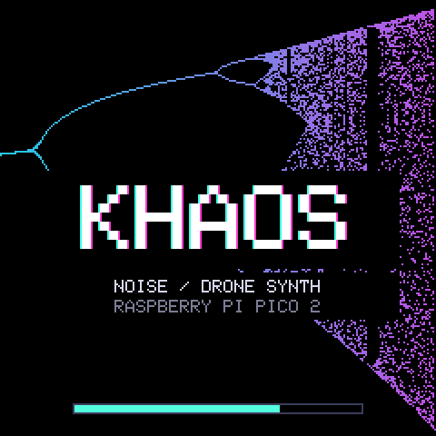
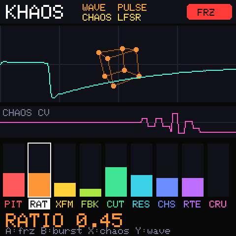

KHAOS は、2 つのオシレーターを互いに FM し合い、カオス写像で揺らし続けるノイズ/ドローン・シンセです。 音が決まった形に落ち着かず、たえず別の表情に転がっていきます。
Raspberry Pi Pico 2(Waveshare Pico-Audio + Pico-LCD-1.3)で動く本体と、同じ音のエンジンをそのまま使った Linux デスクトップ版(AppImage)があります。 起動画面では、ロジスティック写像の分岐図が左から右へ描かれていきます。


波形のスコープの奥で、ワイヤーフレームが回ります。形は波形に連動し(SAW=四面体、PULSE=立方体、TRI=八面体)、音量やバーストで震えます。
2 つのオシレーター(SAW / PULSE / TRI)が互いの出力で周波数を変調し合います。RATIO で 2 つの周波数比を変えます。
ステップ状のランダム電圧を、ピッチ・フィルター・FM に配ります。LFSR / LOGISTIC(ロジスティック写像)/ NOISE の 3 モード、RATE で速さを変えます。
共振つきのステート・バリアブル・ローパスの出力を、入力とオシレーターへ戻します。RESO を上げると、ほぼ自己発振するところまで鳴きます。
サンプルレートとビット深度を一緒に落とします(15 bit → 3 bit)。
BURST でノイズを一発。FREEZE でカオス CV を固定し、ワイヤーフレームの回転も止めます。
音のエンジンはハードウェア非依存の C++ 1 ファイル(monos_dsp.h)。Pico 版と Linux 版で同じものを使っています。
| KEY | ACTION |
|---|---|
| ← → | パラメーター選択 |
| ↑ ↓ | 値を調整(押し続けると加速) |
| A | FREEZE |
| B | BURST |
| X | CHAOS モード切替 |
| Y | 波形切替 |
| Space | 全パラメーターをランダム |
| M / I | ミュート / 初期値 |
| F / Esc | フルスクリーン / 終了 |
キーは Pico 版のボタン(A / B / X / Y / ジョイスティック / CTRL)と同じ役割です。 マウスでは、バーをクリック・ドラッグして値を決め、ホイールで選択中の値を動かせます。
ウィンドウは自由に拡大縮小できます。
GitHub Releases から KHAOS-*-x86_64.AppImage を取得して実行します。
chmod +x KHAOS-*.AppImage ./KHAOS-*.AppImage